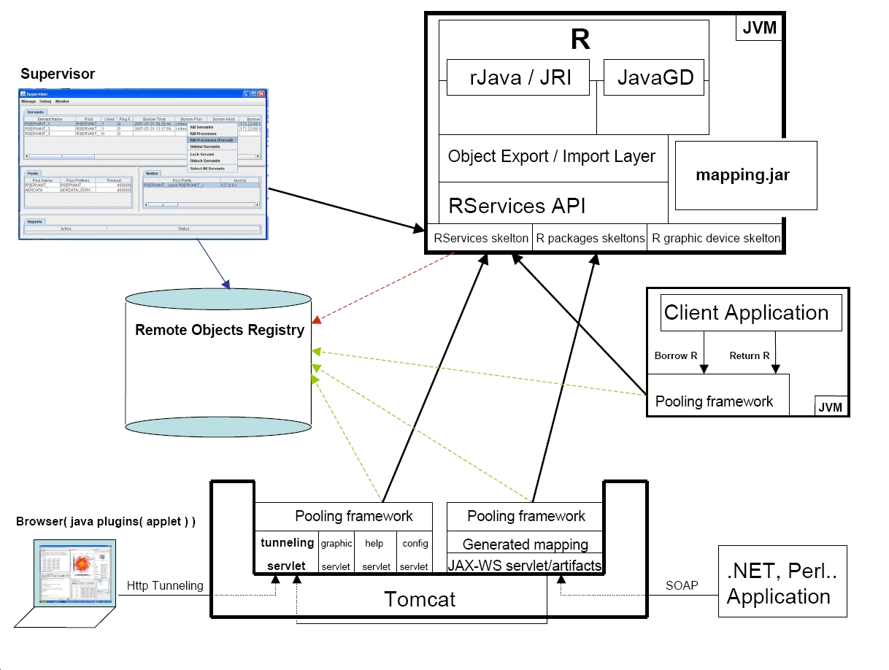
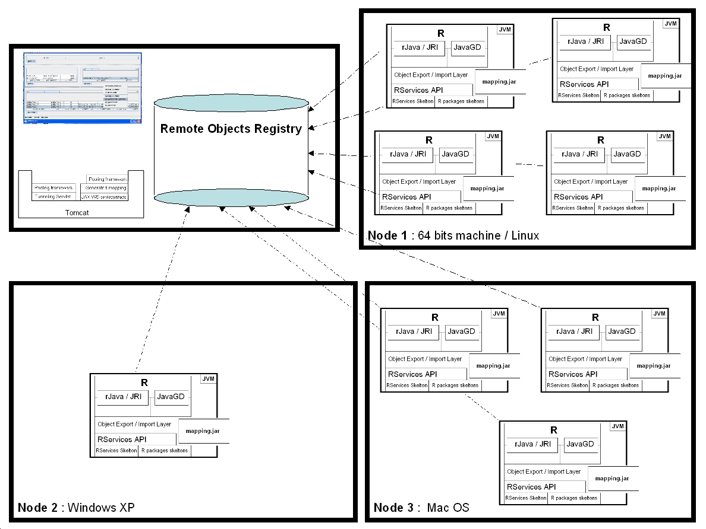
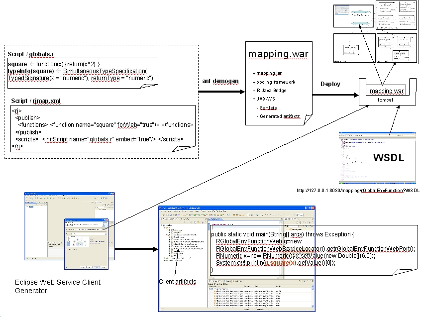
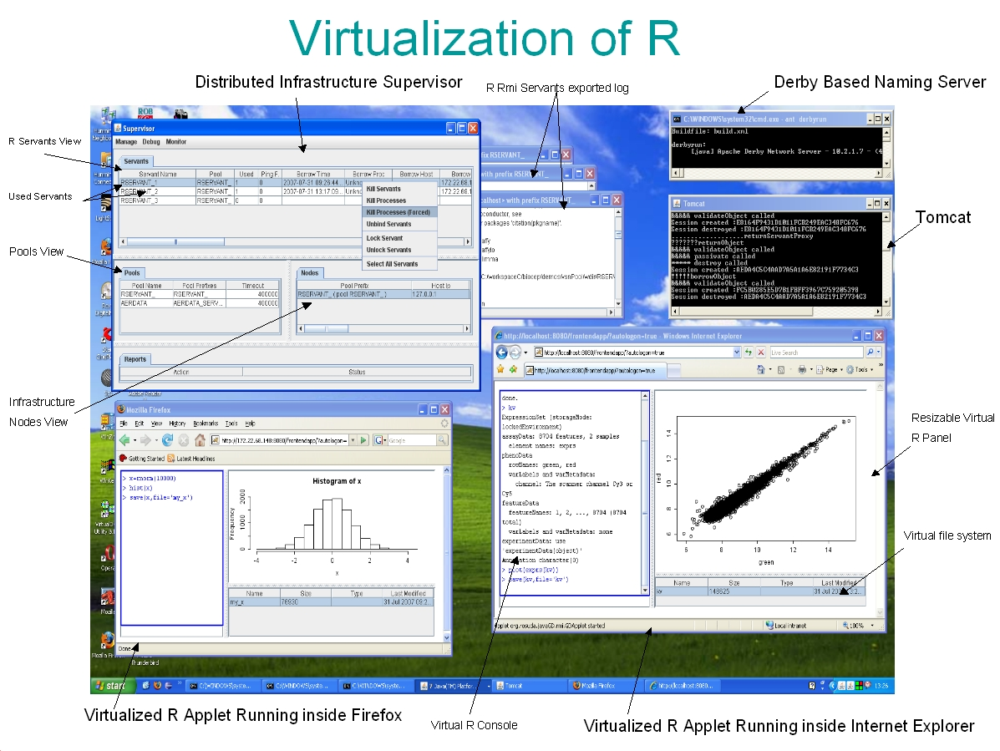
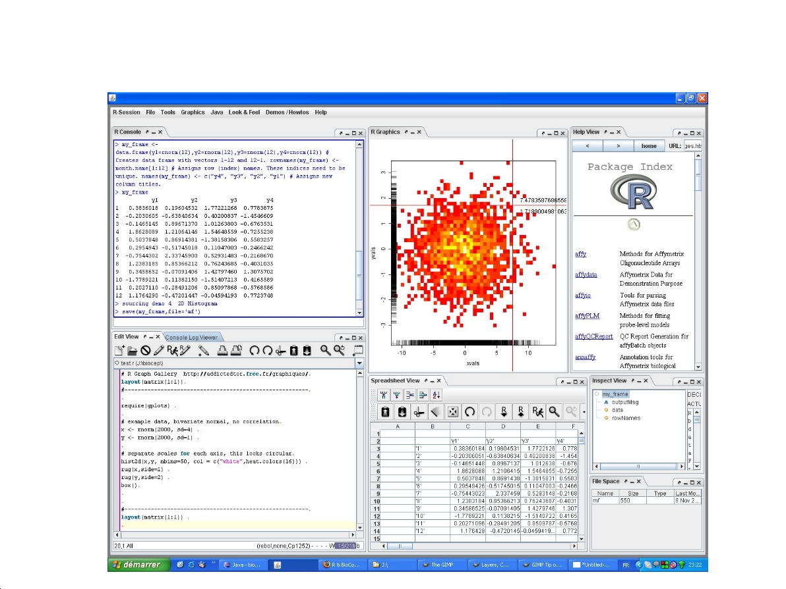

Biocep is a general unified open source solution for R integration.With biocep frameworks and tools, R can be used as a Java object-oriented toolkit
or as an RMI server. calls to R functions from java locally or remotely cope with local and distributed R objects. Stateless and stateful JAX-WS web services
can be generated and deployed on demand for R packages. An infrastructure with a large number of R servers running on an heterogeneous set of machines can be deployed
and used for multithreaded web services, for distributed and parallel computing, for multi-users web applications, for thin web clients graphics "on the fly" generation and for R virtualization in a shared computation resources context. The virtualization is based on a universal advanced GUI for R (R workbench) that can be used also
to control self-managed R servers. A dedicated HTTP gateway enables the control of R servers running behind firewalls. The workbench uses a docking framework,
can run as an applet, via Java Web Start or as a standard desktop application and includes advanced script editors, spreadsheet views fully connected to R,
R objects inspectors views and several new R Graphics interactors.
Detailed Use Cases
- Generate java mappings for R objects (standard/S4).
- Generate java mappings for selected packages' functions (generic/typeInfoed).
- Use R and the R packages as a java high level, object-oriented toolkit.
- Deploy and use R as a remote component.
- Generate light weight proxies to R objects and use them for remote calls chaining or for calls on arguments belonging to different R Servers
- Expose automatically R packages and the R API as JAX-WS stateless or statefull Web Services.
- Use R within a resource pooling infrastructure for scalable, web oriented, data analysis applications.
- Use the Remote Resources Pooling framework (RPF) to deploy and use distributed computational resources (non R based, native libraries with JNI support or java code)
- Use R for parallel computing via a Java API or Web Services.
- Create and use Remote R Instances from within R (snow' like fucntions : makeCluster, clusterEvalQ, clusterExport, clusterApply, stopCluster ..)
- Use the R API from within an applet (book, use and release a Remote R Instance via HTTP Tunneling)
- Use R to generate Graphics on the fly for thin web clients
- Use R from within a Workbench that includes an advanced script editor, a Spreadsheet View fully connected to R data and functions, an R Object Inspector,
composable and dockable Views, interactive R devices, clonable R Graphics..
- Use the Workbench from within a browser or via Java Web Start to access a pool of Remote R Instances
- Use the Workbench to control on demand any Remote R Instance
- Provide a packaging for R Based Desktop applications that enables Web based, one click installation (Embedded R for Windows, detected R for other operating systems)
Project Resources
- The Biocep readme file can be found here
- the public svn link (anonymous access) : svn://svn.r-forge.r-project.org/svnroot/biocep
- the R Workbench can be installed and run via this link (java web start)
- the R Workbench as an applet link last update : 10th march 2008 22h
- slides about biocep can be found here
Author
Karim Chine - kchine@ebi.ac.uk
|
| Biocep Architecture |
|  |
|
| Multi-Node Deployment |
|  |
|
| Web Services Generation |
|  |
|
| Virtualization |
|  |
|
| R Workbench |
|  |
The project summary page you can find here.